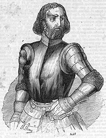

Lope García de Salazar
Don Lope García de Salazar, señor del castillo de Muñatones, en el valle de Somorrostro, nace en 1399 y es considerado por los especialistas como «el más antiguo cronista de Vizcaya». Pero este corajudo banderizo, inmerso en las sangrías entre oñacinos y gamboinos que durante años asolan al viejo Señorío, es de alguna manera el precursor de la literatura vizcaína. Porque además del pormenorizado relato histórico, García de Salazar es un notable contador de historias (como la del Caudillo Blanco) y una suerte de nuevo periodista medieval que nos relata, en primera persona, su peripecia humana.
Nadie puede negarle, por tanto, el estatuto de escritor a este señor de la guerra que corrió, hasta morir a manos de su propio hijo en 1476, toda clase de andanzas defendiendo el blasón de los Velasco. Precisamente el título de su obra capital es el de Bienandanzas e fortunas, que según Justo Gárate deberían haberse titulado Malandanzas y desgracias.